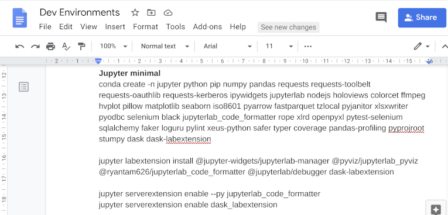

Conda is awesome
I'm a huge fan of Conda. If you work with Python packages that wrap or bind to applications or libraries written in other languages Conda is a fantastic way to install them as it not only installs the Python package but the application or library and the necessary configuration to tie them together too. For example I installed Tensorflow GPU the Google recommended way by installing the appropriate Nvidia drivers, then middleware libraries, then finally pip installing Tensorflow whilst tweaking environment variables and paths to integrate those all together and that not a fun way to burn away an hour or two of your life. With Conda I just type "conda install tensorflow-gpu" - go make a coffee and all that hassle is dealt with. Some packages like Nvidia RAPIDS can only be installed with Conda - unless you're brave enough to build it from source. Conda can save you from dependency management hell and give you back many hours of your life. You can even use it as a cross platform app installer too, for example installing and updating the popular QGIS application. Who needs Chocolatey, Homebrew, or apt-get when you have Conda.
But Conda can still burn you
Despite being more idiot-proof and much faster than most methods for installing packages with complex dependencies there are unfortunately still quite a few ways to trip up when using Conda so I wanted to cover some gotchas and hopefully spare others some of the pain I've experienced using Conda environments.
Even with best practises Conda environments will still break anyway (but much less often)
Even if you follow all my recommendations your Conda environments will break sooner or later if you keep upgrading them. It's unfortunate but package authors are human and dependency management is hard. Occasionally a package will be released with a bug that evaded the package's test suite (the test coverage could be limited or the quality of the tests might vary across different platforms). Also semantic versioning and pinned dependencies aren't perfect either - the author of a foundational package can inadvertently make a breaking change to their API than can ripple through other dependent packages in your environment. The more packages you install into one environment and the more often you update those packages the odds start to stack up that one or more packages will be in a bad state and you'll find your scripts and code that used to work in that environment now break and error out.
It's not all bad news though, there's several strategies to restoring a broken environment which I'll cover next and if you're patient sometimes the package bugs or dependency issues will be fixed for you next time you do an update.
Record your environment configuration
My first practise when creating a new Conda environment is to document the packages I install. You can extract the package list after the fact using Conda's export option to save a Yaml file that you can re-use to create the environment. I'm assuming here you're using the terminal (Anaconda console on Windows) and not Anaconda Navigator or PyCharm IDE to create your environment. I like the Anaconda install if you're setting an environment up for a new Python user and you want a good mix of packages prior to covering virtual environments. If you're already at the stage of wanting to install additional packages and creating new virtual environments for them I strongly recommend using the Miniconda install and creating your environments using the terminal commands. For documenting my environments I prefer a simple technique - record the command line you used to create your environment should worst case you need to reinstall it (or recreate it on a new computer) to a document (I use a Google doc). Remember if you install additional packages into your environment at a later time to go back and update this document.

Part of the reason I use a document rather than just export the Conda environment is I use Jupyter Lab in a lot of my environments so I want to record the additional commands for installing and enabling the Jupyter Lab extensions should I need to recreate the environment (some Conda packages will install their corresponding Jupyter lab extensions... but not all do and there's some debate on whether that is a good practise in the Jupyter lab community given Jupyter could be accessed from a different machine to the one with the Python package). This environment document becomes my ultimate fallback if my Conda environment breaks and I need to delete and reinstall the whole environment, but before resorting to reinstalling if an update has broken your environment there's some faster strategies to try first that will probably get things working again.
Restoring a broken Conda environment
Conda actually maintains a list of revisions to your environment each time you install a new package or update some existing packages. At any point if things go wrong you can revert to an earlier version of your environment. This is something I hadn't known about for months when first using Conda and I wasted a lot of time recreating environments when a simple restore would've been a lot quicker an easier. Check out the environment revision list and install revision commands. It is quite straight-forward to use - it works a bit like a git revert, it creates a new revision that attempts to match the configuration of the older target revision - it doesn't discard all subsequent revisions since the target revision. This won't perfectly restore all your environment state and there's a chance it won't fix a bad update but it's probably the first thing to try if you notice you've gotten a bad update.
Pinning and installing a specific package version
Another option if you've been unlucky enough to update to a broken version of a particular package is to revert that specific package. You can use the same conda list --revisions command to see what the version of the package was when it was last working then explicitly install the good version of the package to force a downgrade. For example if you were an early adopter of Pandas 1.0 but ran into some of its bugs you could:
conda install pandas=0.25.3
To revert back to the previous Pandas version.
Tips to make Conda Environments break less often
I've covered a few options to handle Conda environments breaking and I did that first as it is only a question of when and not if it will happen. There are other steps you can take though to reduce the chances of environments getting into a broken state in the first place though which I'll cover next.
Keep your environments simple
As I mentioned earlier the more packages you install in one environment and the more often you update them the odds of that environment imploding get uncomfortably high. I have (more than once) gotten over enthusiastic with installing every cool sounding machine learning, data processing, and data visualisation package into one Über environment and I always end up regretting it. Beyond packages just breaking it can really slow down the dependency resolving when updating or installing new packages. You're also more likely to get stuck with older versions of packages, as bottlenecks will form between the complicated web of package dependencies if you let an environment become too bloated. The Anaconda base environment is probably a good example of a dangerously large number of packages in a single environment. It works there because they have painstakingly tested all the versions of those packages together for compatibility - if you were to manually add all those packages into a new environment or were brave enough to start updating all the packages in your base Anaconda environment or installing new packages to the base environment you'll run into trouble pretty quickly. Keep your environments simple, as a general rule don't update the base Anaconda environment (with the exception of the conda package itself which is recommended) and if you don't need to update your environment leave it be (I am a compulsive upgrader though which is why I have run into this pain point multiple times).
Enable channel priority strict
I didn't know about this option until I read the conda-forge instructions more carefully but enabling strict channel priority by running this command:
conda config --set channel_priority strict
or manually pasting the line
channel_priority: strict
into your .condarc file is a good idea.
Strict channel priority can save a lot of pain as the compiled libraries in different Conda channels aren't always binary compatible and if you start mixing packages from different channels (conda-forge and defaults channel packages for example) you can experience some nasty run time errors.
As I understand it, strict channel priority will always prefer packages from the higher priority channels (the channels listed first in your .condarc file if not manually specified) even if they are a lower version than the same package available from lower priority channels.
conda-forge is my favourite channel so I do prioritize conda-forge ahead of the defaults channel for most Conda environments - but if I am updating my Miniconda base environment I will explicitly make it prioritize the defaults channel on the command line, e.g.
conda update -n base -c defaults -c conda-forge conda conda-build conda-verify ripgrep mamba python
My general rule is try to prefer a single channel source for most packages in an environment (and always use the same channel priorities for updating an environment as what you did when you created it). If you know a package is pure Python that should be safe to install regardless of what channel it comes from, but for packages that contain compiled libraries it is riskier to install them from different channels into the same environment.
Other things to be wary of with Conda
That covers most of the important points but there's a few other less common issues I've encountered which I'll quickly go over in case anyone runs into these.
Mixing Pip and Conda packages
If you encounter a package on PyPi that doesn't exist on any Conda channel it is possible to pip install it into a Conda environment. I generally try to avoid this but if you do need to do it I believe the recommended approach is to create your Conda environment and install as many packages from Conda first as possible. Then pip install any packages you can't install with Conda - pip should recognise any dependencies it needs that have already been installed with Conda. I haven't experimented with this much, but I believe that you shouldn't go back and install or update different Conda packages after pip installing packages - you should remove and follow the same steps to create the environment again if you wish to update the Conda packages in an environment with pip packages installed (I don't have much experience with this but would welcome any feedback from other coders that have done this). I'd also mention if a PyPi package is pure Python it isn't very difficult to convert that to a Conda package (conda-forge has some good tools with tutorials and examples for doing this) so if you find a popular PyPi package that isn't on a Conda channel please consider converting it yourself.
Write permissions on the working directory on Windows
One issue I've encountered on corporate Windows machines (Anaconda/Miniconda can install to the user local directory and don't need local system admin in that case) is that when installing or updating I noticed some packages download temporary files to the working directory. I had an issue on a work computer where the Anaconda console would open up to the root C drive (with no write permission) and when attempting to create/update Conda environments Conda would just lock up - it didn't error out or log a message that I noticed (I had to use the Windows dev tools to diagnose the problem) but would just stay frozen on the package installing... My fix was to edit the Anaconda console shortcut to default to the user local directory instead of root C drive. This issue occurred a while ago and may be fixed now.
DLL hell on Windows
Another issue I found on Windows was DLL name clashes with Numpy which would happen every time I tried to import Numpy from a script run from the Anaconda console. The fix I found in that case was to set the CONDA_DLL_SEARCH_MODIFICATION_ENABLE environment variable to 1 - you can Google that environment variable and read about related fixes in the Conda troubleshooting guide.
Adding a Path directly to a Conda environment on Windows (Don't do this!)
Before I had a good answer to the DLL problem in the previous point a quick and dirty work-around was to manually add the Conda environment binary and script directories to my Windows Path (Anaconda/Miniconda will even offer to add the base environment to the Windows path for you when installing but recommends against it). This is a very tempting hack for new Conda users since it avoids the DLL and path resolutions issues that are a nasty pain point when starting out (I even see certain cloud VM configurations that use this hack) - but long term it is bad because it breaks the whole purpose of having multiple environments. If you activate a different Conda environment but leave the Path variable pointing to the libraries of the first Conda environment you're asking for some potentially nasty bugs when the wrong library files get used. The only time you might be able to get away with this is if you install Anaconda and only use the base environment and don't use any other Python environments on the same system.
I still have run into some DLL resolution issues even with the CONDA_DLL_SEARCH_MODIFICATION_ENABLE fix when debugging with Visual Studio Code. I found the trick there was to set a PYTHONPATH environment variable in the launch.json (PyCharm sets the PYTHONPATH variable to some sensible defaults out of the box for you but Visual Studio Code takes a bit more effort). As with regular Paths don't permanently add a PYTHONPATH environment variable to your system environment variables (that is no better than adding an environments binary paths to the system Path variable) - make sure the PYTHONPATH is configured by your IDE or within your terminal session - not permanently as a system environment variable.
Other issues
If a Conda install or update fails for other reasons it will normally provide you a link to a log file where you can find the specific details. I've had issues where some Conda packages depended on git being installed and I only noticed that from the log file. You can always fallback to the age old technique of Googling the exact error message as it appears in the terminal or log file and also check the troubleshooting guide mentioned above if you encounter anything else.
Conclusion
I hope this advice helps. I refer back to the Conda documentation often. If you find what appear to be bugs in Conda itself please do raise them on the Conda GitHub page. If you like Conda you can follow Anaconda on Twitter or follow Peter Wang - the founder of Anaconda himself as he occasionally responds directly to user questions.
If you spot any mistakes in my guide or have any experiences with Conda environments you think are useful to share feel free to message me from one of the links below. I'm always keen to learn more and share what I learn as I go.